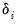
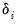
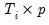
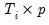
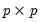
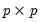

Note that in contrast to the pool specifications described in Equation (53.2), EViews panel equations allow you to specify equations in general form, allowing for nonlinear coefficients mean equations with additive effects. Panel equations do not automatically allow for

coefficients that vary across cross-sections or periods, but you may, of course, create interaction variables that permit such variation.
Other than these differences, the pool equation discussion of “Estimation Background” applies to the estimation of panel equations. In particular, the calculation of fixed and random effects, GLS weighting, AR estimation, and coefficient covariances for least squares and instrumental variables is equally applicable in the present setting.
Consider, for example, the motivation behind the use of the lagged values of the dependent variable as instruments in Equation (55.53). If the innovations in the original equation are i.i.d., then in , the first period available for analysis of the specification, it is obvious that is a valid instrument since it is correlated with , but uncorrelated with . Similarly, in , both and

are potential instruments. Continuing in this vein, we may form a set of predetermined instruments for individual

using lags of the dependent variable:


 is the dependent variable, and
is the dependent variable, and  is a
is a  ‑vector of regressors, and
‑vector of regressors, and  are the error terms for
are the error terms for  cross-sectional units observed for dated periods
cross-sectional units observed for dated periods  . The
. The  parameter represents the overall constant in the model, while the  and
parameter represents the overall constant in the model, while the  and  represent cross-section or period specific effects (random or fixed).
represent cross-section or period specific effects (random or fixed). is a  matrix of instruments for cross-section
is a  matrix of instruments for cross-section  , and,
, and, instead of
instead of  .
. for a suitably chosen  weighting matrix
for a suitably chosen  weighting matrix  .
. , an estimate of the coefficient covariance matrix is computed as,
, an estimate of the coefficient covariance matrix is computed as,  is an estimator of , and
is an estimator of , and  is a derivative matrix given by:
is a derivative matrix given by: , (2) choosing the weighting matrix
, (2) choosing the weighting matrix  , and (3) determining an estimator for
, and (3) determining an estimator for  .
. ,
, are not autocorrelated, the optimal GMM weighting matrix for the differenced specification is given by,
are not autocorrelated, the optimal GMM weighting matrix for the differenced specification is given by, contains a mixture of strictly exogenous and predetermined instruments. Note that this weighting matrix is the one used in the one-step Arellano-Bond estimator.
contains a mixture of strictly exogenous and predetermined instruments. Note that this weighting matrix is the one used in the one-step Arellano-Bond estimator.